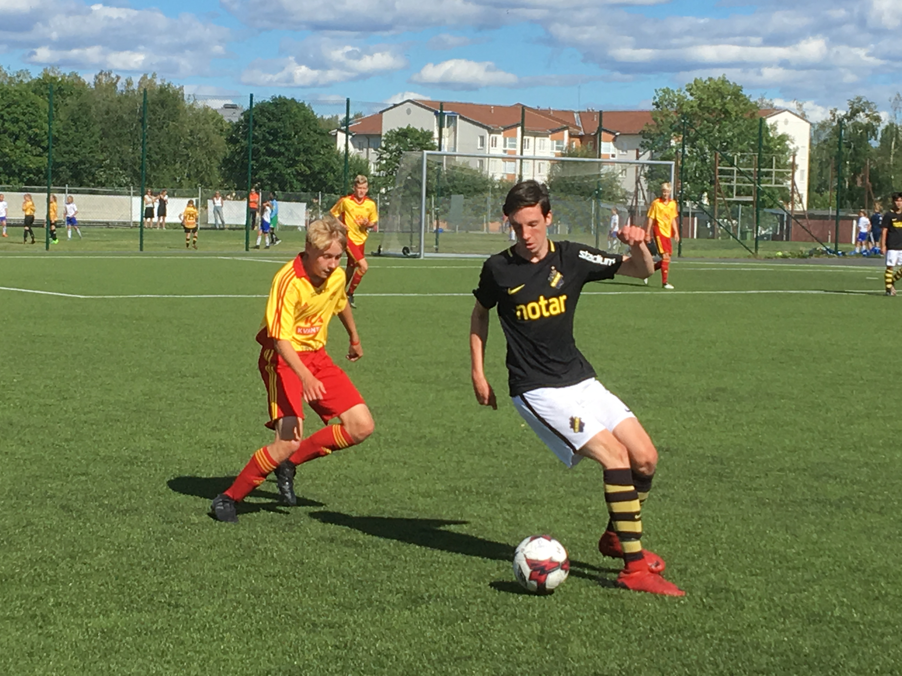

Fakta om AIK
AIK Fotboll är en svensk fotbollsklubb grundad år 1891 i Stockholm som en sektion till idrottsklubben AIK. Fotbollslaget AIK har spelat i Allsvenskan under 92 säsonger och klubben vann sitt första allsvenska guld säsongen 1931/1932 och har blivit svenska mästare tolv gånger. Lagets hemmaplan var mellan 1937 och 2012 Råsunda Fotbollsstadion. Från och med säsongen 2013, är Friends Arena den nya hemmaplanen. AIK har tolv SM-titlar, åtta Svenska cupen guld och 92 säsonger i Allsvenskan vilket är flest säsonger i Allsvenskan. Klubben har en tredjeplacering i Fotbollsallsvenskans maratontabell och en delad fjärdeplats vad avser antal vunna SM-titlar. AIK har vunnit Allsvenskans publikliga 39 gånger, vilket är oöverträffat, och blev 1999 en av få svenska klubbar som tagit sig till gruppspelet i Champions League.
Min historia med AIK
Jag har varit ett AIK fan hela livet då jag redan som 3-åring gick på min första match på Råsunda med min morfar. Vilket jag är väldigt glad och stolt över. Jag har ofta gått på matcher, men nu under tre år varit säsongskortsinnehavare på norra ståplats. Dessutom har jag själv också spelat fotboll i AIK under flera år men slutade för cirka 1 år sedan.
